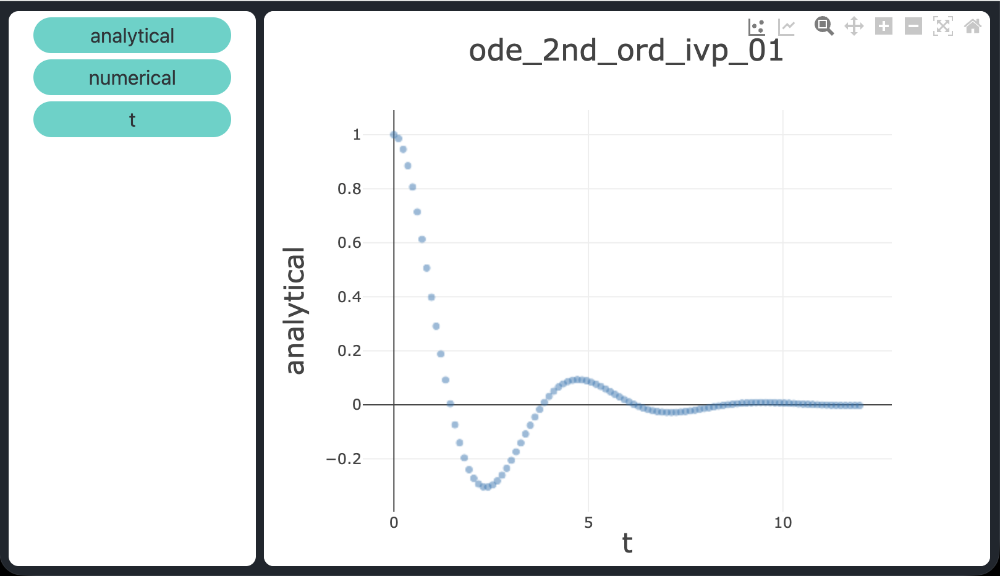
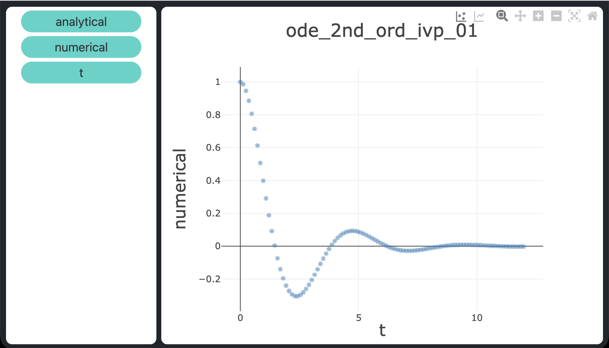

Risolutori di equazioni differenziali ordinarie in C++ con boost.odeint
Quando le prestazioni e il controllo preciso delle risorse sono requisiti non negoziabili —
si pensi al firmware embedded, ai loop di controllo real-time, ai simulatori ad alta frequenza o
ai kernel scientifici in esecuzione su cluster HPC — il C++ rimane il linguaggio di riferimento.
A differenza degli ambienti interpretati o compilati just-in-time, il C++ compila direttamente in
codice macchina nativo, offre al programmatore una gestione deterministica della memoria e non
introduce overhead nascosto a runtime.
Queste proprietà lo rendono adatto in modo naturale al lavoro numerico computazionalmente intensivo,
tra cui l'integrazione di equazioni differenziali ordinarie (ODE).
La libreria boost::numeric::odeint (parte della ben nota raccolta
Boost) porta in C++ risolutori di ODE di livello
industriale attraverso un'interfaccia pulita e generica basata sui template.
Fornisce una gamma di stepper — da Euler a passo fisso fino a metodi adattativi di ordine elevato —
lasciando al programmatore il pieno controllo del layout di memoria e delle scelte sui tipi.
Questo post presenta tre programmi dimostrativi che risolvono problemi ODE numericamente usando lo stepper
Dormand-Prince RK45 (dopri5) con controllo adattivo del passo.
Ogni programma confronta i risultati numerici con la soluzione analitica nota ed esporta i risultati
in un file CSV per una visualizzazione immediata.
I tre problemi affrontati sono: una ODE del primo ordine, un sistema di due ODE
accoppiate del primo ordine e una ODE del secondo ordine (ridotta a sistema
del primo ordine).
Tutti e tre provengono dallo stesso insieme di problemi usato nel post
Risolutori di equazioni differenziali ordinarie in Python,
di cui questo articolo costituisce il naturale corrispettivo in C++.
Per ottenere il codice sorgente si veda il paragrafo Download del codice completo
alla fine del post.
Prerequisiti
I tre programmi richiedono:
- Un compilatore compatibile con C++17 (ad es.
g++oclang++) - La libreria Boost con gli header di
boost.odeintinstallati:- macOS con Homebrew:
brew install boost - Debian / Ubuntu:
sudo apt install libboost-dev
- macOS con Homebrew:
build.sh nel repository e impostare la variabile BOOST_INC
sulla directory che contiene gli header Boost nel proprio sistema.
Il valore predefinito punta a un'installazione Homebrew; modificarlo se la configurazione è diversa.Compilare tutti e tre i programmi con:
bash build.sh./ode_1st_ord_ivp_01
./sys_1st_ord_ivp_01
./ode_2nd_ord_ivp_01Lo stepper Dormand-Prince RK45
Tutti e tre i demo usano lo stesso stepper: dopri5, il metodo Runge-Kutta di Dormand-Prince
di ordine 4/5.
È un metodo esplicito, adattivo e a passo singolo appartenente alla famiglia dei Runge-Kutta embedded.
A ogni passo calcola due stime della soluzione — una di ordine 4 e una di ordine 5 — e usa la
loro differenza come stima dell'errore locale per regolare automaticamente il passo.
Ciò significa che l'integratore compie passi ampi nelle regioni regolari e li riduce dove la
soluzione varia rapidamente, mantenendo l'errore di troncamento locale entro la tolleranza richiesta
senza sprecare valutazioni della funzione.
In boost.odeint lo stepper viene istanziato come:
using namespace boost::numeric::odeint;
auto stepper = make_dense_output(1.0e-9, 1.0e-9, runge_kutta_dopri5<state_type>());Convenzioni
In questo post vengono adottate le seguenti convenzioni:
- $t$ è la variabile indipendente (tempo)
- $x$ e $y$ sono funzioni incognite di $t$, scritte in forma compatta ($x \equiv x(t)$, $y \equiv y(t)$)
- $x'$ indica la derivata prima di $x$ rispetto a $t$; $x''$ indica la derivata seconda
- Le condizioni iniziali sono espresse come Initial Value Problem (IVP), detti anche problemi di Cauchy
ODE del primo ordine con IVP
Si consideri il seguente problema di Cauchy:
$$x' = \sin t + 3\cos 2t - x, \quad x(0) = 0, \quad t \in [0,\,10]$$
la cui soluzione analitica è:
$$x(t) = \tfrac{1}{2}\sin t - \tfrac{1}{2}\cos t + \tfrac{3}{5}\cos 2t + \tfrac{6}{5}\sin 2t - \tfrac{1}{10}e^{-t}$$
verificabile tramite Wolfram Alpha.
In C++ con boost.odeint l'ODE deve essere espressa come un callable che scrive il membro destro
nell'argomento derivata.
Per un problema scalare del primo ordine il tipo di stato è semplicemente un double:
typedef double state_type;
void ode_rhs(const state_type &x, state_type &dxdt, const double t)
{
dxdt = std::sin(t) + 3.0 * std::cos(2.0 * t) - x;
}integrate_adaptive, che fa avanzare la soluzione
da $t_0$ a $t_1$ usando lo stepper dopri5 con controllo adattivo del passo.
Un osservatore lambda viene chiamato dopo ogni passo accettato, fornendo lo stato corrente e il
tempo; in questo caso viene usato per registrare la soluzione numerica insieme al valore analitico
a ogni punto di output:
auto stepper = make_dense_output(1e-9, 1e-9, runge_kutta_dopri5<state_type>());
state_type x = 0.0; // x(0) = 0
integrate_adaptive(stepper, ode_rhs, x, 0.0, 10.0, 0.01,
[&](const state_type &x_obs, double t) {
double analytical = 0.5*sin(t) - 0.5*cos(t)
+ 0.6*cos(2*t) + 1.2*sin(2*t)
- 0.1*exp(-t);
csv << t << "," << analytical << "," << x_obs << "\n";
});Sistema di due ODE del primo ordine con IVP
Si consideri il seguente sistema accoppiato:
$$\begin{cases}
x' = -x + y, & x(0) = 2 \\
y' = 4x - y, & y(0) = 0
\end{cases}
\quad t \in [0,\,5]$$
le cui soluzioni analitiche sono:
$$x(t) = e^{t} + e^{-3t}, \qquad y(t) = 2e^{t} - 2e^{-3t}$$
verificabili tramite Wolfram Alpha.
Per un sistema di $n$ equazioni il tipo di stato è un vettore.
Usando std::vector<double> di dimensione due, il membro destro diventa:
typedef std::vector<double> state_type;
void sys_rhs(const state_type &s, state_type &dsdt, const double /* t */)
{
dsdt[0] = -s[0] + s[1]; // dx/dt
dsdt[1] = 4.0*s[0] - s[1]; // dy/dt
}integrate_adaptive seguono lo stesso
schema del caso scalare; l'osservatore riceve ora un vettore di stato a due elementi a ogni passo:
state_type s = {2.0, 0.0}; // x(0)=2, y(0)=0
integrate_adaptive(stepper, sys_rhs, s, 0.0, 5.0, 0.01,
[&](const state_type &s_obs, double t) {
double ax = exp(t) + exp(-3.0*t);
double ay = 2.0*exp(t) - 2.0*exp(-3.0*t);
csv << t << "," << ax << "," << ay
<< "," << s_obs[0] << "," << s_obs[1] << "\n";
});Qui il link al sorgente completo su GitHub.
ODE del secondo ordine con IVP
Si consideri il seguente problema di Cauchy per un'equazione del secondo ordine:
$$x'' + x' + 2x = 0, \quad x(0) = 1,\quad x'(0) = 0, \quad t \in [0,\,12]$$
la cui soluzione analitica è:
$$x(t) = e^{-t/2}\!\left(\cos\frac{\sqrt{7}\,t}{2} + \frac{1}{\sqrt{7}}\sin\frac{\sqrt{7}\,t}{2}\right)$$
verificabile tramite Wolfram Alpha.
Un'ODE del secondo ordine non è gestita direttamente dagli stepper del primo ordine.
La tecnica standard consiste nell'introdurre la variabile ausiliaria $y = x'$ e riscrivere l'equazione
come sistema equivalente del primo ordine:
$$\begin{cases}
x' = y \\
y' = -y - 2x
\end{cases}
\quad x(0) = 1,\; y(0) = 0$$
Questa riduzione trasforma un problema scalare del secondo ordine in un sistema bidimensionale del primo ordine,
che boost.odeint gestisce in modo identico al sistema accoppiato della sezione precedente.
In C++ il membro destro diventa:
typedef std::vector<double> state_type;
// s[0] = x, s[1] = y = x'
void ode2_rhs(const state_type &s, state_type &dsdt, const double /* t */)
{
dsdt[0] = s[1]; // x' = y
dsdt[1] = -s[1] - 2.0 * s[0]; // y' = -y - 2x
}1.0, 0.0.
L'osservatore estrae solo la prima componente ($x$) per il confronto con la soluzione analitica,
poiché è questa la grandezza di interesse fisico:
state_type s = {1.0, 0.0}; // x(0)=1, x'(0)=0
integrate_adaptive(stepper, ode2_rhs, s, 0.0, 12.0, 0.01,
[&](const state_type &s_obs, double t) {
double ax = exp(-t/2.0) * (cos(sqrt7h*t) + sin(sqrt7h*t)/sqrt7);
csv << t << "," << ax << "," << s_obs[0] << "\n";
});sqrt7 = std::sqrt(7.0) e sqrt7h = sqrt7 / 2.0
sono costanti precalcolate.Qui il link al sorgente completo su GitHub.
Visualizzazione dei risultati
Ogni programma scrive un file CSV nella directory corrente:
ode_1st_ord_ivp_01.csv— colonne:t,analytical,numericalsys_1st_ord_ivp_01.csv— colonne:t,analytical_x,analytical_y,numerical_x,numerical_yode_2nd_ord_ivp_01.csv— colonne:t,analytical,numerical
- Trascinare la colonna
tsull'asse X - Trascinare
analytical(oppureanalytical_x/analytical_y) sull'asse Y per tracciare la soluzione esatta - Trascinare
numerical(oppurenumerical_x/numerical_y) sull'asse Y per sovrapporre l'approssimazione numerica
atol = rtol = 1e-9), confermando che dopri5 risolve tutti e tre i problemi con elevata accuratezza.

Soluzione analitica dell'ODE del primo ordine: $x(t) = \tfrac12\sin t - \tfrac12\cos t + \tfrac35\cos 2t + \tfrac65\sin 2t - \tfrac110e^-t$.

Soluzione numerica dell'ODE del primo ordine ottenuta con lo stepper adattivo dopri5 di boost.odeint — visivamente indistinguibile da quella analitica a
atol = rtol = 1e-9.
Soluzione analitica dell'ODE del secondo ordine: $x(t) = e^-t/2\!\left(\cos\tfrac\sqrt{7}\,t2 + \tfrac1\sqrt{7}\sin\tfrac\sqrt{7}\,t2\right)$.

Soluzione numerica dell'ODE del secondo ordine ottenuta con lo stepper adattivo dopri5 di boost.odeint — visivamente indistinguibile da quella analitica a
atol = rtol = 1e-9.Download del codice completo
Il codice sorgente completo è disponibile su
GitHub.
Questo materiale è distribuito su licenza MIT; sentiti libero di usare, condividere, "forkare" e adattare tale materiale come credi.
Sentiti anche libero di pubblicare pull-request e bug-report su questo repository di GitHub oppure di contattarmi sui miei canali social disponibili nell'angolo in alto a destra di questa pagina.